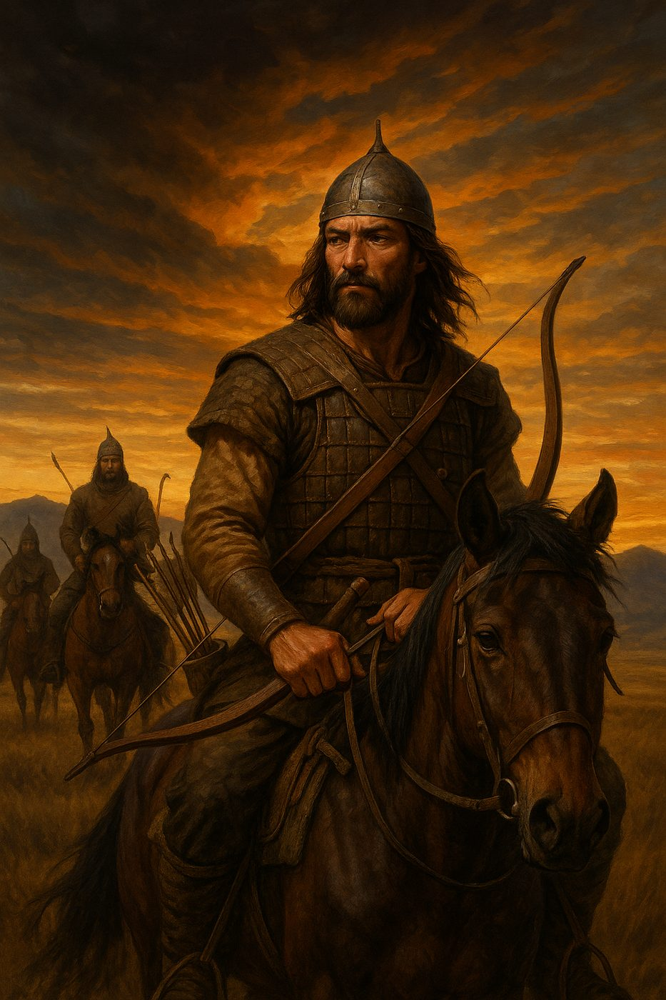
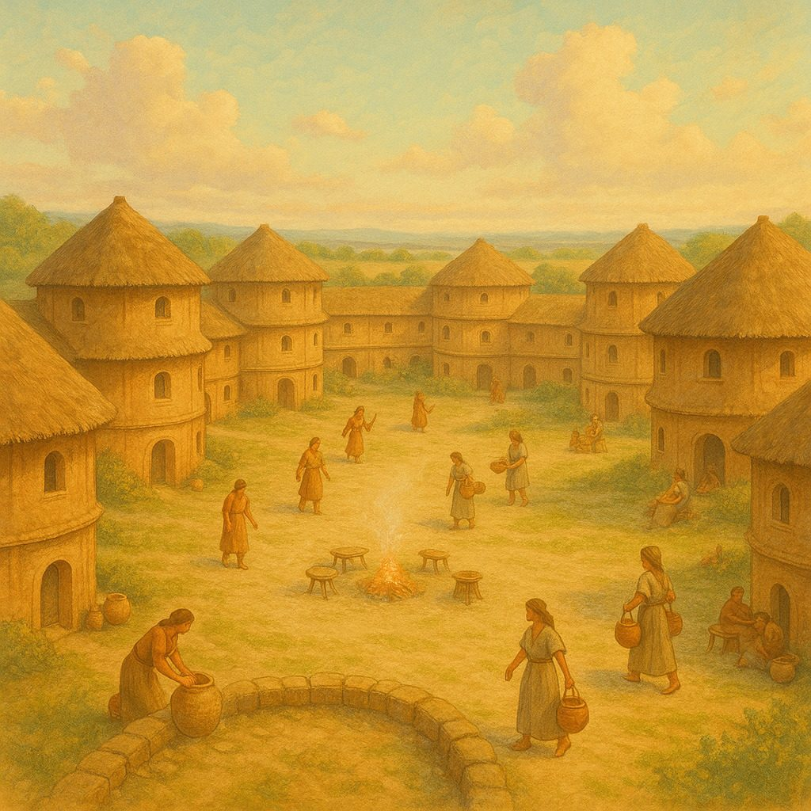
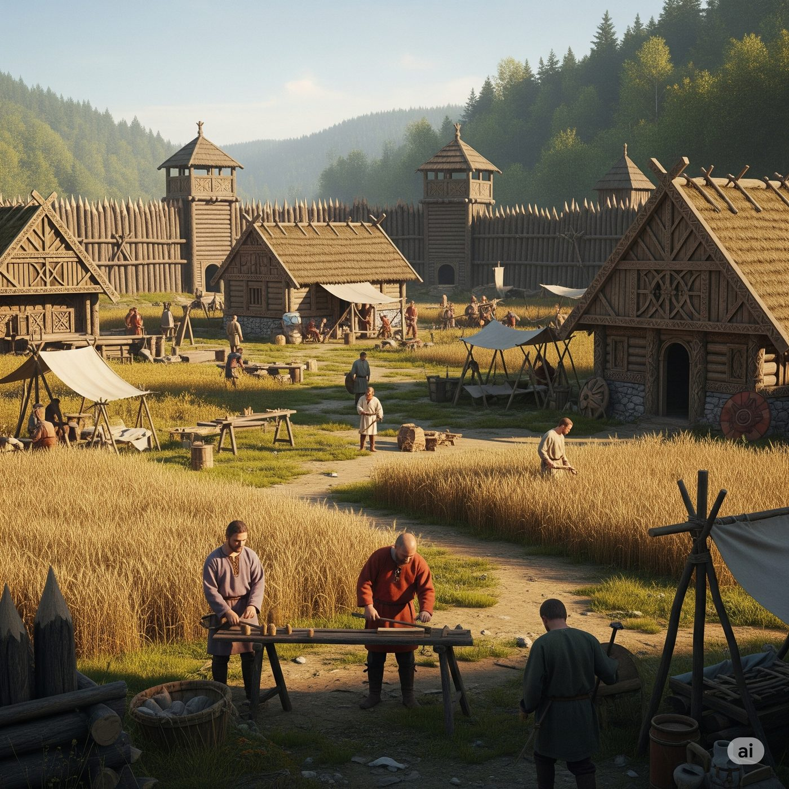
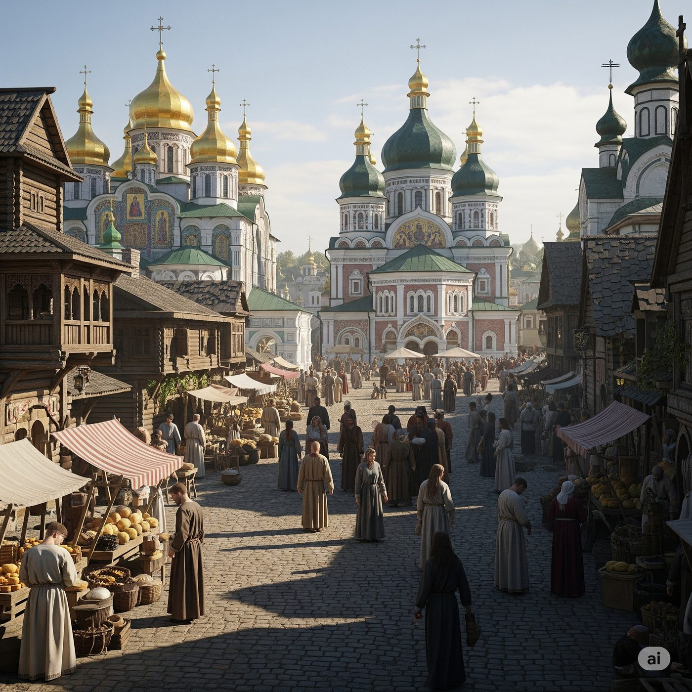
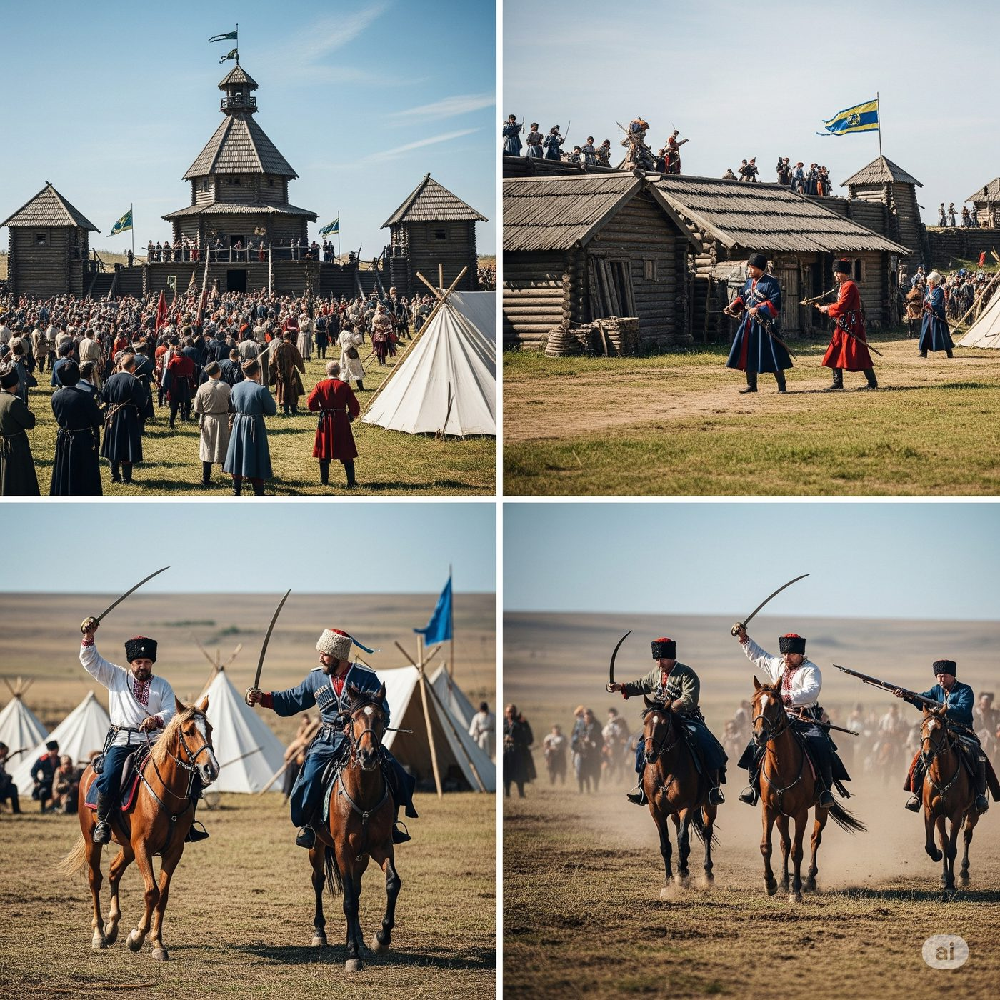
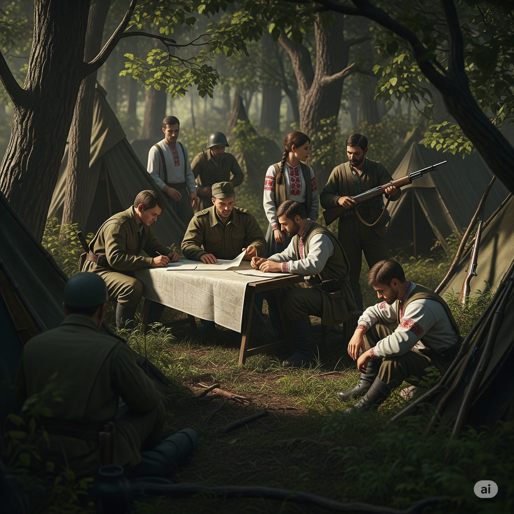
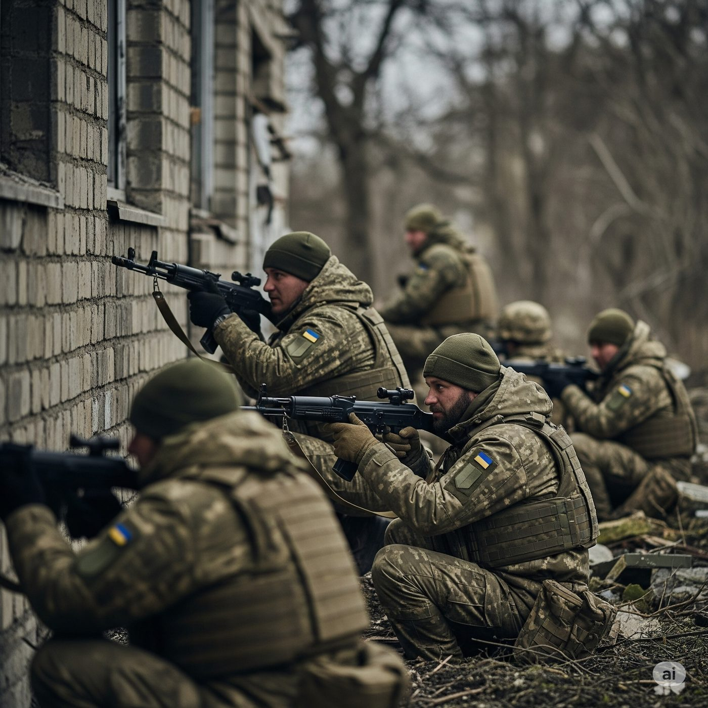

Зараз у роботі

Скіфська доба: «Шлях воїна»
513 рік до н.е. Перський цар Дарій переходить Дунай, щоб підкорити скіфів. Аргіс, син вождя Спаргапіса, — розвідник і вершник, на очах якого степ стає полем війни.
- Кінний бій і стрільба з лука на скаку, зокрема назад через плече.
- Двобої в стилі souls-like: витривалість, парирування, стійки, складні суперники.
- Розвідка, засідки, напади на обози й тактика випаленої землі.
- Перші вибори з наслідками та механіка Волі.
Майбутні епохи
Епохи подано в хронологічному порядку; порядок виходу може відрізнятися.

Трипілля: «Поклик серця»
Поселення-гіганти, посуха і перші чужинці на обрії. Цілителька Зоряна вчиться захищати свою громаду там, де звичні обряди вже не допомагають.
- Життя найбільших поселень тогочасної Європи.
- Травництво й цілительство як ігрова механіка.
- Перша оборона мирного народу.

Давні слов'яни: «Сила єднання»
Розрізнені племена й набіги зі сходу. Гончар Радим іде від громади до громади, щоб із розрізнених дружин зібрати спільне ополчення.
- Подорожі між племенами, торгівля й переговори.
- Дипломатія, де Воля важить більше за меч.
- Оборона поселень від кочовиків.

Київська Русь: «Земля героїв»
Три покоління захисників Русі: прикордонні фортеці проти печенігів, князівські чвари перед половецькою загрозою і трагедія битви на Калці.
- Дружинний бій, щит і сокира, оборона фортець.
- Переговори між князями й ціна розбрату.
- Історичні битви й постаті епохи.

Козацька доба: «Вільний дух»
Січ, морські походи на чайках і похід на Кафу 1616 року — а потім Чорна рада 1663-го, де свобода вирішується не шаблею, а інтригою.
- Шабельний бій і абордаж.
- Морські походи на чайках.
- Розвідка, стелс і політичні інтриги.

ХХ століття: «Шлях до незалежності»
Повстанський рух 1940-х: лісові бази, засідки й ціна вибору між двома тоталітарними режимами.
- Партизанська тактика й бій у лісі.
- Моральні дилеми та відповідальність за молодших.
- Зброя й спорядження відповідно до епохи.

Сучасність: «Загартована воля»
Фінал саги. Розвідник Олесь — на війні, яку Україна веде зараз. Пам'ять крові поєднує його з пращурами, а їхній спадок стає його опорою.
- Сучасний бій, розвідка й робота в групі.
- Спадок пращурів у вирішальний момент.
- Кілька фіналів залежно від зібраного спадку.
Оновлення
Кожен модуль ми оновлюватимемо й після виходу: нові місії, суперники, механіки та виправлення — з огляду на відгуки гравців і нові історичні дослідження.